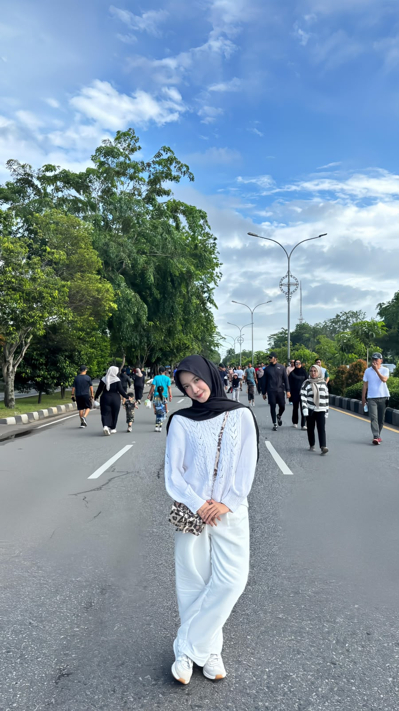

Sedikit cerita tentang perjalanan, minat, dan hal-hal yang membentuk saya hari ini.

“Jadilah perempuan yang mampu berdiri di atas usahanya sendiri.”
Saya percaya bahwa setiap perempuan memiliki kekuatan untuk menentukan jalan hidupnya. Bagi saya, kesuksesan bukan hanya tentang hasil yang dicapai, tetapi juga tentang proses, kerja keras, dan ketekunan dalam meraih impian. Saya ingin menjadi pribadi yang mandiri, tidak mudah menyerah, serta terus belajar dan berkembang dari setiap pengalaman. Dengan usaha yang sungguh-sungguh, saya berharap dapat membanggakan diri sendiri, keluarga, dan menjadi pribadi yang bermanfaat bagi orang lain.
Shopping — menikmati proses berburu gaya dan detail visual yang menarik.
Editor — mengolah gambar dan video menjadi konten yang enak dilihat dan bercerita.